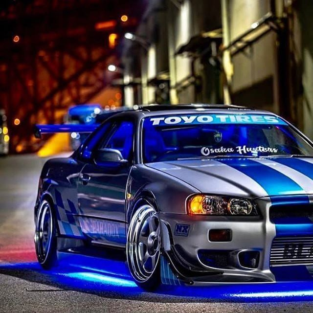
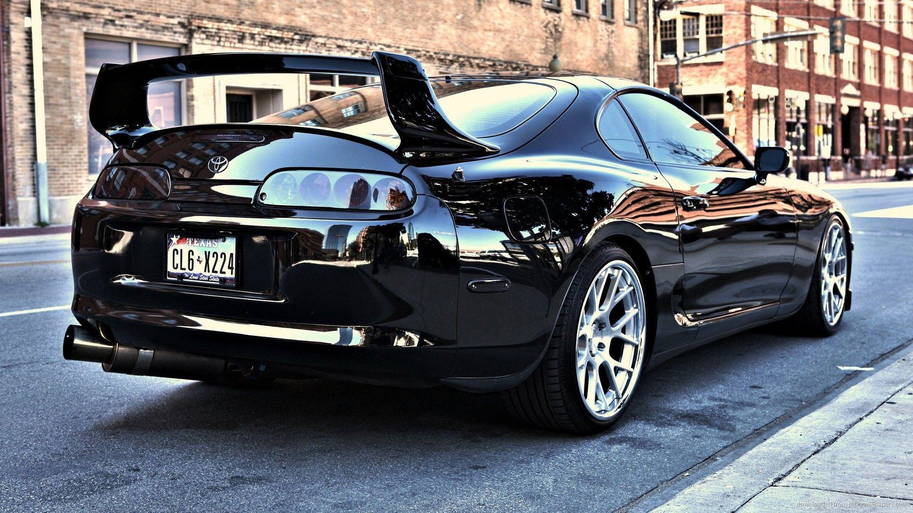

Clássicos dos Carros
Nissan Skyline R34
O Nissan Skyline R34 é um ícone japonês conhecido por seu desempenho e presença no cinema.
Toyota Supra MK4
O Supra é famoso pelo seu motor 2JZ, sendo um dos carros mais modificados do mundo.
Ford Mustang 1967

Um dos muscle cars mais clássicos dos EUA, com visual agressivo e motor potente.